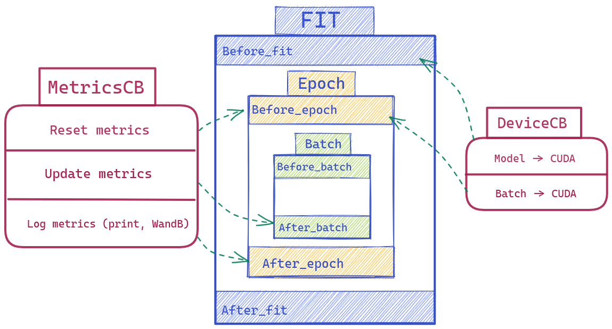

Building a Flexible Training Loop via a system of callbacks - fastai course part 2 2022

Minimalist Training Loop
def fit(epochs, model, loss_func, opt, train_dl, valid_dl):
for epoch in range(epochs):
model.train()
for xb,yb in train_dl:
loss = loss_func(model(xb), yb)
loss.backward()
opt.step()
opt.zero_grad()
model.eval()
with torch.no_grad():
tot_loss,tot_acc,count = 0.,0.,0
for xb,yb in valid_dl:
pred = model(xb)
n = len(xb)
count += n
tot_loss += loss_func(pred,yb).item()*n
tot_acc += accuracy (pred,yb).item()*n
print(epoch, tot_loss/count, tot_acc/count)
return tot_loss/count, tot_acc/countIf you are a data scientist, you might be familiar with the code above - a minimalist training loop. It does a couple of things:
- Training through a number of epochs
- In each epoch, loop through every batch
- In each batch, depending on if the model is training or validating, having different behaviors
However, most of the time, we won’t stop here … What if 🤔 :
- The dataset is unbalanced, we should better adding more metrics than just accuracy, maybe
F1,ROCAUC, … - You want to log the result: in a file/show it in a realtime graph / push it on WandB
Early Stopping,Save Best Model, and Much more …
Then you will add more and more ideas in the training loop, to a point that changing anything becomes a headache. If you want to reactivate an old feature that you’ve tried last week, combine several ideas, … Big chance that you will just create a new notebook with Learner-Copy1, Learner-Copy2, Learner-CopyN, …
Let’s design a new Flexible Training Loop where we keep it as simple as possible but also having a full power of plugging new ideas via callbacks.
Callback here is not a python feature but a design concept. It just mean triggering a function when you’ve done something
A Learner with CallBacks
There are 3 core pieces of a training loop
- Fit
- Epoch
- Batch
We will wrap around each event here with a before and after methods (so before_batch after_batch before_epoch after_epoch before_fit after_fit) with full access to the Learner (which includes everything: the model, optimizer, dataloader, … ).
class Learner():
def __init__(self, model, dls, loss_func, lr, cbs, opt_func=optim.SGD): fc.store_attr()
def one_batch(self):
self.preds = self.model(self.batch[0])
self.loss = self.loss_func(self.preds, self.batch[1])
if self.model.training:
self.loss.backward()
self.opt.step()
self.opt.zero_grad()
def one_epoch(self, train):
self.model.train(train)
self.dl = self.dls.train if train else self.dls.valid
try:
self.callback('before_epoch')
for self.iter,self.batch in enumerate(self.dl):
try:
self.callback('before_batch')
self.one_batch()
self.callback('after_batch')
except CancelBatchException: pass
self.callback('after_epoch')
except CancelEpochException: pass
def fit(self, n_epochs):
self.n_epochs = n_epochs
self.epochs = range(n_epochs)
self.opt = self.opt_func(self.model.parameters(), self.lr)
try:
self.callback('before_fit')
for self.epoch in self.epochs:
self.one_epoch(True)
self.one_epoch(False)
self.callback('after_fit')
except CancelFitException: pass
def callback(self, method_nm): run_cbs(self.cbs, method_nm, self)The exception here is for adding more control - exit an event when we need
Pause for a second and imagine if you want to write a simple DeviceCallBack, what will you do ? …
So:
Before_fit: Model -> CUDABefore_batch: (Input, Label) -> CUDA
# from fastai course 2022 p2
class DeviceCB(Callback):
def __init__(self, device=def_device): fc.store_attr()
def before_fit(self, learn):
if hasattr(learn.model, 'to'): learn.model.to(self.device)
def before_batch(self, learn): learn.batch = to_device(learn.batch, device=self.device)What about a MetricsCallback based on torcheval (a library from Pytorch for model evaluations). Well, we might need some basic steps below:
Before_epoch: Reset all metricsAfter_batch: Update new values to metrics ( accuracy, loss, … per batch )After_epoch: Compute the final metrics for this epoch (Ex: Weight Average of Accuracy based on a list of accuracy per batch). Then print the result, push it on WandB, …
# from fastai course 2022 p2
class MetricsCB(Callback):
def __init__(self, *ms, **metrics):
for o in ms: metrics[type(o).__name__] = o
self.metrics = metrics
self.all_metrics = copy(metrics)
self.all_metrics['loss'] = self.loss = Mean()
def _log(self, d):
print(d)
wandb.log(log)
def before_fit(self, learn): learn.metrics = self
def before_epoch(self, learn): [o.reset() for o in self.all_metrics.values()]
def after_epoch(self, learn):
log = {k:f'{v.compute():.3f}' for k,v in self.all_metrics.items()}
log['epoch'] = learn.epoch
log['train'] = 'train' if learn.model.training else 'eval'
self._log(log)
def after_batch(self, learn):
x,y,*_ = to_cpu(learn.batch)
for m in self.metrics.values(): m.update(to_cpu(learn.preds), y)
self.loss.update(to_cpu(learn.loss), weight=len(x))

How to go even further?
We don’t want to repeat ourselves so the before and after in the previous Learner version can be refactored. We can use @decorator or @contextmanager for wrapping things before and after the event.
The fastai course experiment with this idea further with even considering 'predict','get_loss','backward','step','zero_grad' as events. It means there is nothing that we can not control here. An example of when it is useful is experimenting with a Momentum Learner by rewriting the zero_grad
#|export
class MomentumLearner(TrainLearner):
def __init__(self, model, dls, loss_func, lr=None, cbs=None, opt_func=optim.SGD, mom=0.85):
self.mom = mom
super().__init__(model, dls, loss_func, lr, cbs, opt_func)
def zero_grad(self):
with torch.no_grad():
for p in self.model.parameters(): p.grad *= self.mom
Instead of forgetting all the previous gradients by assigning them to zero, we can multiply them by a number < 1. So in the next update, we also take into account what we’ve trained before ( or momentum ).